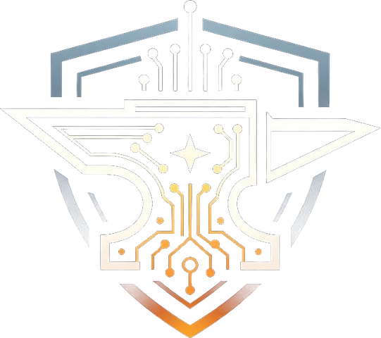

⚒ The one-smith workshop of
CREATIONS
A mountain workshop in Wilkes County, NC. I forge real, live software for real people.
⚔ There's more, if you go looking - the Lab →
Currently forging
CodyNoah.net 1.0 - one clear door in